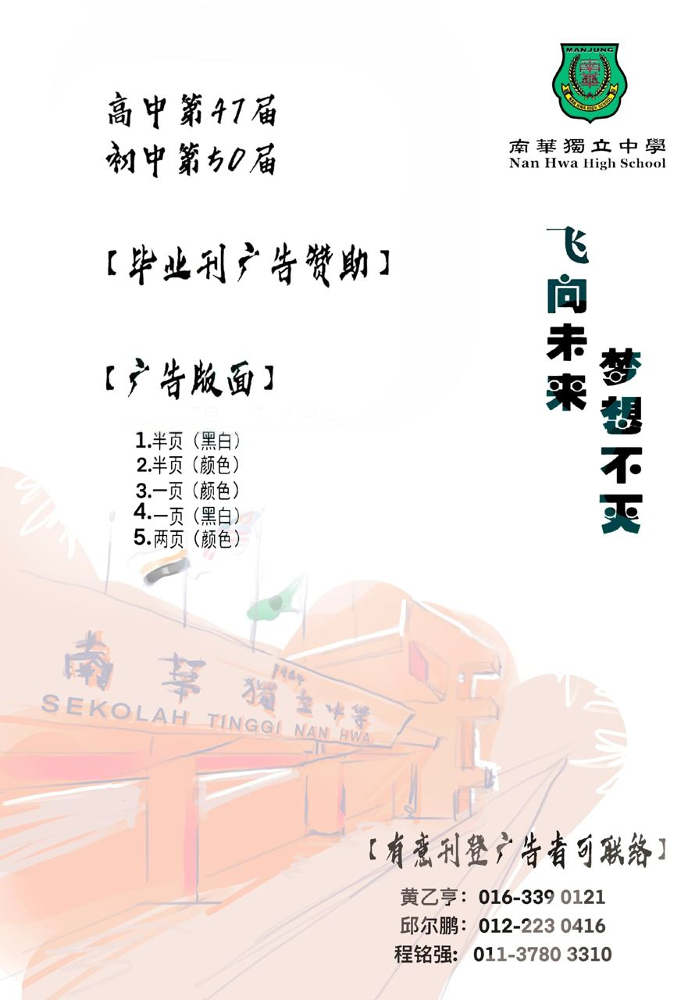

六年同窗化为一本毕业刊，一串欢笑和一段朝花夕拾永存心底。六年前的相遇，六年后的告
六年同窗化为一本毕业刊，一串欢笑和一段朝花夕拾永存心底。六年前的相遇，六年后的告别，未知的相聚全凭缘分辗转。但六年间的相识相知是并肩努力的证明，是怀念青春的寄托，寄托在一本毕业刊。但今年因为疫情，我校今年高三生的筹款毕业刊款项面临巨大的挑战，但这并不能阻止我们出版毕业刊。所以我们决定在遵守标准作业程序（SOP）的前提下，通过以社交媒体的方式向各界善心人士征求商业广告刊登和筹募款项，所筹募到的款项将全数归纳本届毕业基金。
往年的这段时间，我校高三生已齐心积极外出征求商业广告刊登和筹款以作为出版该届毕业刊的费用。多年来仰仗各界人士的热心支持，我校的毕业刊才得以顺利出版。今年的疫情更使今年的高三生的筹款雪上加霜，所以希望通过社交媒体能够为今年的高三生顺利出版毕业刊。
这届的毕业刊的主题是“飞向未来，梦想不忘”。梦是欲望不是梦境，想是行动不是想像，所以梦想是梦和想的结晶。因为梦想所以选择远方，世界之大，每位毕业生都各奔东西寻找适合自己的舞台，上演一场属于自己的话剧。
希望各界善心人士可以支持协助我们顺利出版2021年毕业刊，先此致万二分的感谢。
